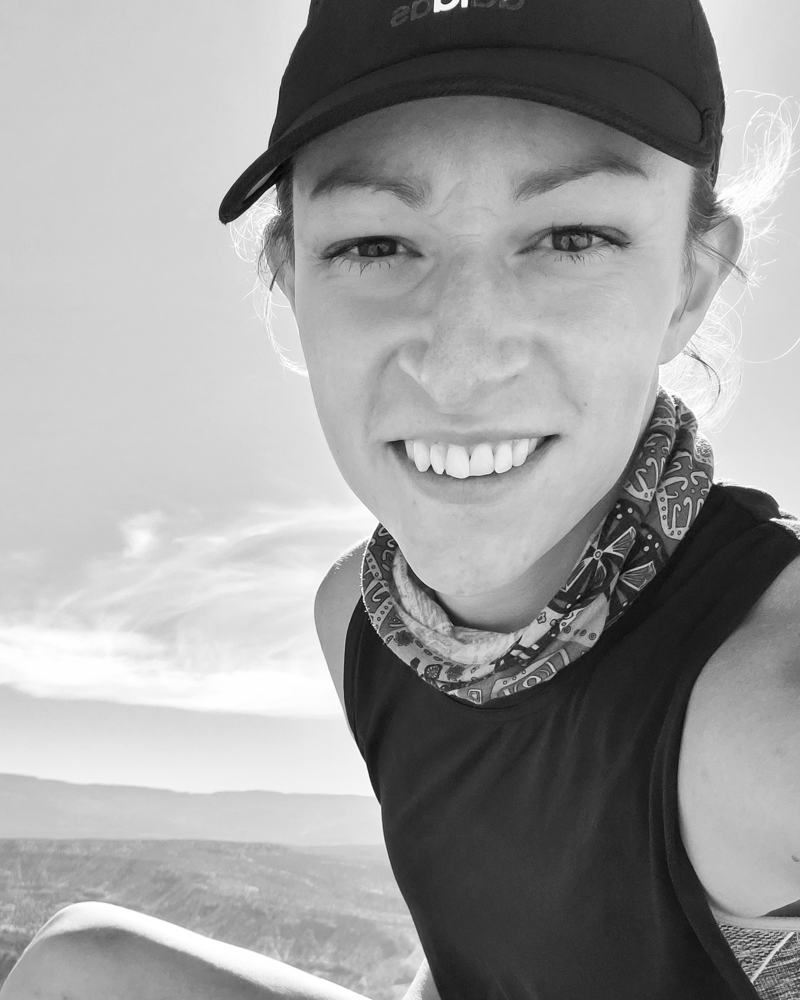

Bio
Hi, I am Jessi. I am 35 years of age and currently residing near Langley, WA on Whidbey Island. I graduated from the University of Washington in 2008, and have spent my professional career doing GIS and environment - related work in both the public and private sectors, ranging from fisheries biology, to urban forestry, to carbon sequestration, to adding map layers to Google Maps (more on these below). I am a musician, having released multiple records both with bands and solo. I am also an avid outdoors person, and do a lot of hiking and scrambling of peaks in the Cascades and Olympics every summer, both on and off trail. This gives me a sense of exploration and adventure!
Education History
I graduated from Capital HS in Olympia, WA in 2004. After that, I attended the University of Washington, where I graduated in 2008 with a B.A in Environmental Science. I went back to the University of Washington in 2012 for a Certificate in Geographic Information Systems (GIS). More recently, I enrolled in Code Fellows software development bootcamp, and plan to graduate in either June or July of 2021.
Job Experience
- Staff Scientist - Innovasea
- Information Systems Associate - Forterra
- Mapping Specialist - Google
Future Goals
After graduating Code Fellows, I hope to become a software developer!
Top Ten Hikes
- Park Creek Pass to Stehekin to Rainy Pass (North Cascades)
- The Needles/Chesler Park (Canyonlands National Park
- Gray Wolf/Cameron/Grand Pass Loop (Olympic National Park)
- Snowy Lakes (North Cascades)
- Osceola Peak (Pasayten Wilderness)
- Alpine Lakes High Route (Alpine Lakes Wilderness)
- Navajo Ledge (Capitol Reef National Park)
- Spider Meadow (Glacier Peak Wilderness)
- Cathedral Pass Loop (Pasayten Wilderness)
- Mt. Daniel (Alpine Lakes Wilderness)